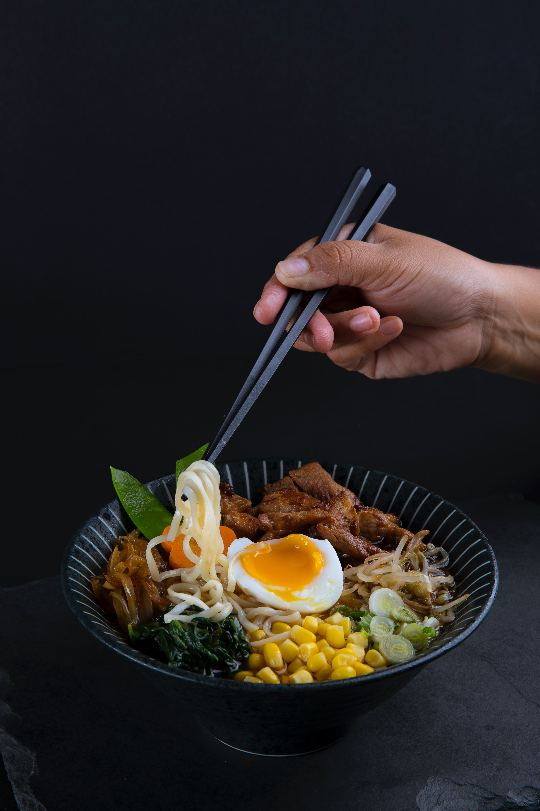

Tonkotsu Ramen

Description
Tonkotsu ramen is an excellent introduction to Japanese noodle soups.
Deeply flavoured tonkotsu pork broth, ramen noodles and chashu pork belly
come together to create comfort in a bowl.
Makes 4 servings.
Prep time: 30 minutes
Cook time: 12 hours
Total time: 12 hours 30 minutes
Ingredients
- 8 cups Tonkotsu broth
- 12 oz ramen noodles (good quality) cooked to packaging
- 2 lbs Pork (chashu)
- 1/4 cup soy sauce
- 3/4 cup sake (1/2 for pork and 1/4 for for flavor base)
- 3/4 mirin (1/2 for pork and 1/4 for flavor base)
- 1/4 cup sugar
- 2-3 garlic cloves left whole
- 2 green onions, coarsely chopped
- 4 Medium boiled eggs
- 1/2 cup shiro miso (for flavor base)
- 1-2 tsp kosher salt (for flavor base)
- Thinly sliced green onions
Steps
Chashu pork:
- Combine the soy, sake, mirin, sugar, garlic and green onions in a
ziploc bag large enough to hold the pork belly. Stick a straw in
the bag and seal the ziploc bag up against it (so the straw is the
only opening). Suck as much of the air out as you can and seal.
- Sous vide the pork for 10-11 hours at 170F
- Remove pork from ziplock bag. Discard bag and marinade.
- Let chashu pork belly cool completely
- Slice across the chashu pork (so you get bacon like slices)
into 8-12 slices about 1/8 to 3/16 inches thick. Reserve. You
will not need all the pork for 4 servings.
Miso flavor base:
- Combine all ingredients for base in a small sauce pan and simmer at lowest setting for about 5 minutes.
Medium boiled eggs:
- Bring enough water to cover the eggs to a boil. If you have a way to
prick the eggshell do it. Boil large eggs for 6 minutes 30 seconds. If
using extra large eggs boil them for 7 minutes 30 seconds. You may have
to adjust your times slightly depending on the exact size of your eggs
but this should get you pretty close
- Submerge the eggs in cold or ice water to chill. This stops the egg yolks
from continuing to set up. Peel. Cut in half right before you serve your
tonkotsu ramen.
Assembly:
- Boil the ramen noodles in plenty of water as directed by the packaging.
If there’s no translation on the packaging usually its 4 minutes. You
don’t need to salt the water.
- Gently fry the chashu pork in a non-stick skillet until lightly browned.
- Place 1/4 of miso flavor base in the bottom of four bowls.
- Ladle in about 1/2 cup of the tonkotsu broth (store bought is fine) into
each of the bowls and stir to mix
- Add the noodles. Pour in another 1 1/2 cups of the tonkotsu broth per bowl
- Top with the egg, pork and green onions.
Return to Top